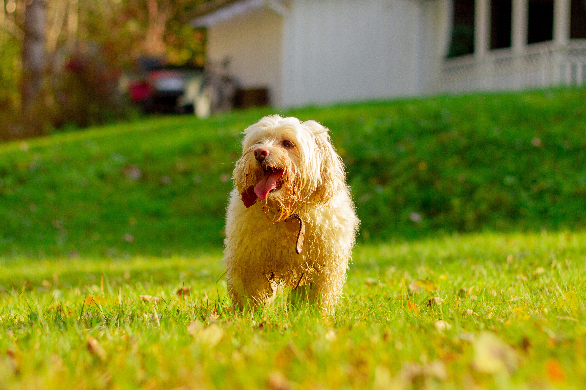
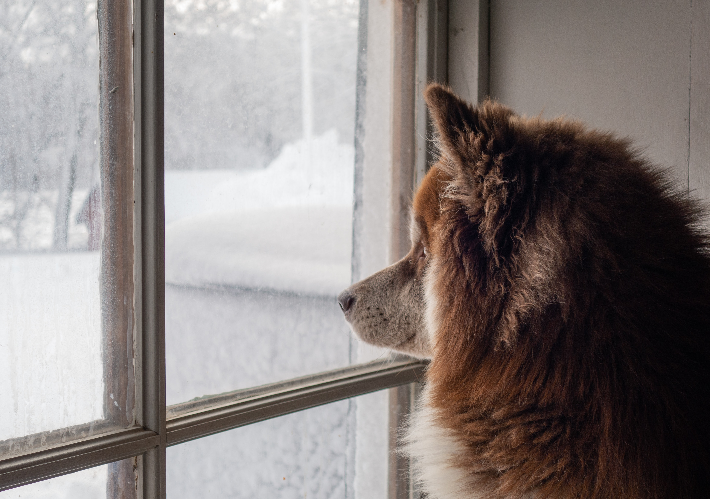
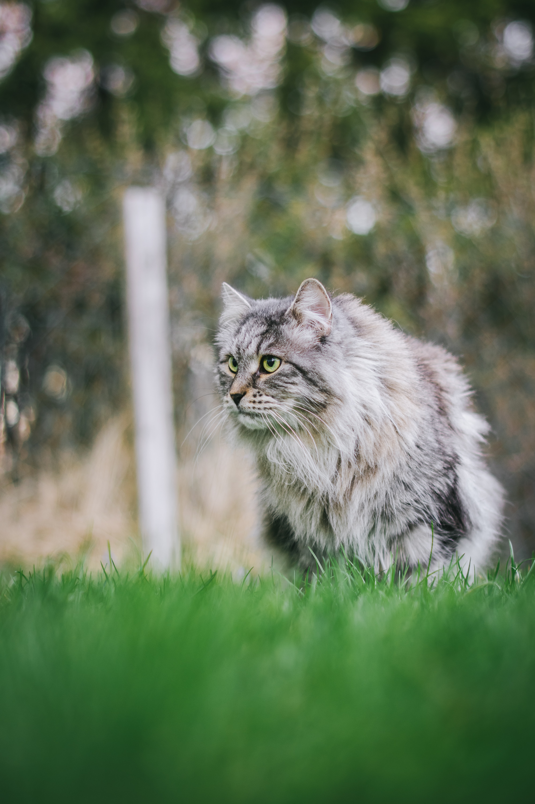

<!DOCTYPE html>
<html lang="en">
<head>
    <meta charset="UTF-8">
	<meta name="viewport" content="width=device-width, user-scalable=no, initial-scale=1.0, maximum-scale=1.0, minimum-scale=1.0">
    <title>Welcome to Finland Stories</title>
    <link rel="stylesheet" href="../style.css">
</head>

</html>

<body class="blog-posts">
	<section class="header header-top">
		<div class="greeting"><h3>An Interactive Guide to Finland for International Students</h3></div>
		<div class="header-items">
		    <div class="logo">FinInNote</div>
		    <input type=text class="search-bar" name="seach" placeholder="What are you looking for...">
		    <button type="button">Search</button>
		</div>
		<nav class="nav-bar" onclick="myFunctionX(this)">
          <div class="bar1"></div>
          <div class="bar2"></div>
          <div class="bar3"></div>
        </nav>
    </section>
    
    <section class="header header-body">
		<div class=header-breadscrum>
		    <a href="../index.html" id="finland">Home</a>
		    <span class="divider">></span>
		    <a href="../life.html" id="budget">Life</a>
		    <span class="divider">></span>
		    <a href="../life.html" id="planning">Lifestyle</a>
		    <span class="divider">></span>
		    <a href="life-pet-visa.html" id="pet-breadscrum">Pet</a>
		    <div class="line"></div>
		    <p id="title">Pet's Visa</p>
		    
		</div>
    </section>
    
    <section class="header header-bottom">
    <nav class="main-menu" id="myTopnav">
		    <span id="home"><a href="../index.html">Home</a>
		    <div class="line"></div>
           </span>
           
            <span id="about">
                <a href="../about.html">About</a>
                <div class="line"></div>
            </span>
           
            <div class="sub-nav">
                <span id="study">
                    <a href="../study.html">Study</a>
                    <a class="sub-menu" href="../study/study-finnish-language.html">Language</a>
                    <a class="sub-menu" href="../study/study-universities.html">Universities</a>
                    <a class="sub-menu" href="../study/post1.html">Scholarship</a>
                    <a class="sub-menu" href="../study/study-entrance-exam.html">Exams</a>
                    <div class="line"></div>
                </span>
		    </div>

            <div class="sub-nav">
            <span id="life"  class="active-page"><a href="../life.html">Life</a>
                    <a class="sub-menu" href="life-housing.html">Housing</a>
                    <a class="sub-menu" href="life-marriage.html">Family</a>
                    <a class="sub-menu" href="life-pet-visa.html">Pets</a>
                    <a class="sub-menu" href="top-ten-finnish-taboos.html">Tips</a>
                    <a class="sub-menu" href="life-insurrance.html">Insurance</a>
                    <div class="line"></div>
            </span>
            </div>        

            <div class="sub-nav">
                <span id="travel"><a href="../travel.html">Travel</a>
                    <a class="sub-menu" href="../travel/travel-budget.html">Budget</a>
                    
                    <a class="sub-menu" href="../travel/travel-top-local-food.html">Food</a>
                    
                    <a class="sub-menu" href="../travel/travel-go-with-us-helsinki.html">Guides</a>
                    <a class="sub-menu" href="../travel/travel-reliable-agencies.html">Agency</a>
                    
                    <div class="line"></div>
                </span>
		    </div>
            
            
            <span id="policy"><a href="../policy.html">Policy</a>
		    <div class="line"></div></span>               

            <span id="contact"><a href="../contact.html">Contact</a>
		    <div class="line"></div></span>    

		</nav>

	</section>
	
	<div id="life-pet-visa">
		<h1 style="text-align: center;"><strong><span style="color: #ff6600;">PET&rsquo;S PASSPORT&nbsp;</span></strong></h1><br><br>
        <p><span style="font-weight: 400;">Many people find it is difficult to leave their pets when they go abroad. Therefore, the decision to take their pets with them is commonly made. This article will guide you how to take your pet abroad with you.</span></p>
        
        <h2><span style="font-weight: 400; color: #ff6600;">  1. Pet microchip</span></h2>
        <p><span style="font-weight: 400;">To enter Finland, first, you have to prepare your pet a microchip with an ISO 11784/11785 compliant 15-digit pet microchip:</span></p>
        <p><span style="font-weight: 400;">In case, your pet already has a microchip that is not ISO 11784/11785 compliant, then you have 3 choices:</span></p>
        <ul>
        <li style="font-weight: 400;" aria-level="1"><span style="font-weight: 400;">You can prepare your own microchip scanner.</span></li>
        <li style="font-weight: 400;" aria-level="1"><span style="font-weight: 400;">You can contact the official at the Border Inspection Post where you will enter the EU and ask if they have scanners that can read your pet&rsquo;s chip.</span></li>
        <li style="font-weight: 400;" aria-level="1"><span style="font-weight: 400;">If your pet's current microchip can still be read, your veterinarian can implant a compliant chip. The number and implant dates of both microchips must be documented on the EU Health Certificate (see step #5).</span></li>
        </ul><br>
        
        <h2 style="font-weight: 400; color: #ff6600;">2.Vaccination</h2>
        
        <p><span style="font-weight: 400;">Your pet must have the vet&rsquo;s proof </span><span style="font-weight: 400;">of a current rabies vaccination administered after a microchip was implanted to enter Finland.</span></p>
        <p><span style="font-weight: 400;">The primary rabies vaccination must be administered no sooner than 21 days before entering Finland.</span></p>
        <p><span style="font-weight: 400;">There is no waiting period after booster vaccinations as long as:</span></p>
        <ul>
        <li style="font-weight: 400;" aria-level="1"><span style="font-weight: 400;">The previous vaccination was administered after a microchip was implanted AND</span></li>
        </ul>
        <ul>
        <li style="font-weight: 400;" aria-level="1"><span style="font-weight: 400;">The booster vaccination was administered before the previous vaccination had expired.</span></li>
        </ul>
        <p><span style="font-weight: 400;">If your pet is entering Finland from a high-rabies country, it must wait for a minimum of 30 days after the primary or booster vaccination before receiving a rabies titer test (see step #3).</span></p>
        
        <span style="font-weight: 400; color: #ff6600;">&nbsp; &nbsp; &nbsp; &nbsp; <h2>3. Rabies Titer Test</h2></span>
        <p><span style="font-weight: 400;">If your pet is entering Finland from a&nbsp;</span><span style="font-weight: 400;">high-rabies country</span><span style="font-weight: 400;">, your pet must be microchipped, then vaccinated for rabies (in that order). After waiting a minimum of 30 days after primary or booster vaccinations, a rabies titer test (FAVN) must be administered. (Have your veterinarian scan your pet's microchip prior to the titer test.)</span></p>
        <p><span style="font-weight: 400;">Samples must be processed at approved laboratories. Assuming test results are within acceptable limits, your pet can enter Finland no sooner than 3 calendar months after the date the blood was drawn and avoid quarantine. This step is not required unless entering Finland from a&nbsp;</span><span style="font-weight: 400;">high-rabies country</span><span style="font-weight: 400;">.</span></p>
        <span style="font-weight: 400;">&nbsp; &nbsp; &nbsp; &nbsp;<span style="color: #ff6600;"> <h2>4. Tapeworm treatment (dog only)</h2></span></span>
        <p><span style="font-weight: 400;">Before your dog can enter Finland, it must be treated against certain tapeworms one to five days prior to entering the country unless your pet is entering directly from the United Kingdom, Ireland, Malta or Norway.</span></p>
        <span style="font-weight: 400;">&nbsp; &nbsp; &nbsp; &nbsp; &nbsp;<span style="color: #ff6600;"><h2>5. Entering Finland</h2></span></span>
        <p><span style="font-weight: 400;">Pets entering by air from non-EU countries must do so at the Border Inspection Post at Helsinki. Pets entering by road must do so at the Border Inspection Post on Vaalimaa Road from Russia.</span></p>
        <p><span style="font-weight: 400;">Pets should enter Finland directly or transit through another EU Member State. If your pet transits through a high-rabies country, then a Transit Declaration will be required stating that your pet has had no contact with rabies-carrying animals and remained secured within the airplane or airport.</span></p>
        
        <p><span style="font-weight: 400;">All domestic dogs and cats must be free of evidence of disease communicable to humans when examined at the port of entry to Finland. If your dog or cat is not in apparent good health, further examination by a licensed veterinarian may be required at your expense.</span></p>
        <p><span style="font-weight: 400;">Pets can enter Finland in the cabin, as checked baggage or air cargo. There are no quarantine facilities in Finland. Pets not meeting requirements will need to arrange for quarantine in official quarantine facilities in other EU Member States.</span></p>
        <p>&nbsp;</p>


		
	</div>
    <section class="footer">
		<div class="footer-grid-container">
		    <div class="footer-0"><h3>FinInNote</h3>
		    <span>@2020 FPP <a href="policy.html">PRIVACY POLICY</a></span></div>
           <div class="social-media"><h4>Follow Us</h4>
           <a href="https://facebook.com"><span id="facebook" style=background-image:url(../images/fb.png)></span></a>
           <a href="https://youtube.com"><span id="youtube" style=background-image:url(../images/youtube.png)></span></a>
           <a href="https://instagram.com"><span id="instagram" style=background-image:url(../images/instagram.png)></span></a>
           <a href="https://twitter.com"><span id="twitter" style=background-image:url(../images/twitter.png)></span></a>
           <a href="https://linkedin.com"><span id="linkedin" style=background-image:url(../images/linkedin.png)></span></a>
           </div>
		    
		    <div class="footer-1">About
		        <p>Welcome to Finland!<br>FinInNote is on a mission to assist all International Students to vistit and integrate into Finland easily and effortlessly.<br>Because we KNOW and we CARE! <br>
		        SEND US A LETTER! In case you would like to chat.</p>
		    </div>
		    <div class="footer-2">Study
		        <ul>
		            <li><a href="finnish-language.html">Language</a></li>
		            <li><a href="universities.html">Top Universities</a></li>
		            <li><a href="scholarship">Scholarships</a></li>
		            <li><a href="exam-admission.html">Exams & Admission</a></li>
		            <li><a href="study-guides.html">Study Guides</a></li>
		            <li><a href="community.html">Community</a></li>
		        </ul>
		    </div>
		    <div class="footer-3">Life
		        <ul>
		            <li><a href="cost-of-living.html">Cost of living</a></li>
		            <li><a href="lifestyle.html">Lifestyle</a></li>
		            <li><a href="accommodation.html">Accommodation</a></li>
		            <li><a href="food-expense.html">Food & Expenses</a></li>
		            <li><a href="holidays-events.html">Holidays & Events</a></li>
		            <li><a href="hall-of-joy.html">Hall of Joys</a></li>
		        </ul></div>
		    <div class="footer-4">Travel
		    <ul>
		            <li><a href="attractions.html">Top Attractions</a></li>
		            <li><a href="family-travel.html">Family on budget</a></li>
		            <li><a href="journey-planner.html">Journey Planner</a></li>
		            <li><a href="what-to-bring.html">What to bring?</a></li>
		            <li><a href="transportation.html">Transportation</a></li>
		            <li><a href="travel-recommendations.html">Recommendations</a></li>
		        </ul></div>
		    <div class="footer-5">Trade Center
		    <ul>
		            <li><a href="secondhand-items-hunt.html">Secondhand Items Hunting</a></li>
		            <li><a href="rent-buy.html">Rent or Buy</a></li>
		            <li><a href="coupons.html">Coupons & Discount</a></li>
		            <li><a href="lucky.html">Feeling lucky</a></li>
		            <li><a href="wholesale.html">Wholesale</a></li>
		        </ul></div>
		    <div class="footer-6">Services
		    <ul>
		            <li><a href="inquiries.html">Inquiries & support</a></li>
		            <li><a href="faqs.html">FAQs</a></li>
		            <li><a href="storage-service.html">Storage Service</a></li>
		            <li><a href="apartment-hunting.html">Apartment Hunting</a></li>
		            <li><a href="pickup-deliver.html">Pickup & Deliver</a></li>
		            <li><a href="job.html">Job Application</a></li>
		        </ul></div>
		</div>
		<div class="back-to-top-button">
		<a href="#post1" class="footer-button"><h4>Back To Top</h4> <span style=background-image:url(../images/character-01.png)></span></a>
		</div>
		<section class="footer-bottom">
            
            <div><h3>All Rights Reserved @2020</h3></div>		    
		</section>

    </section>
    
    	<script>
    // When the user scrolls the page, execute myFunction
    window.onscroll = function() {myFunction()};

    // Get the navbar
    var myTopnav = document.getElementById("myTopnav");

    // Get the offset position of the navbar
    var sticky = myTopnav.offsetTop;

    // Add the sticky class to the navbar when you reach its scroll position. Remove "sticky" when you leave the scroll position

    function myFunction() {
        
        
      if (window.pageYOffset >= sticky-13) {
          
        myTopnav.classList.add("sticky")
      } else {
        myTopnav.classList.remove("sticky");
      }
    }
    </script>
	<script src="script.js"></script>
</body>


